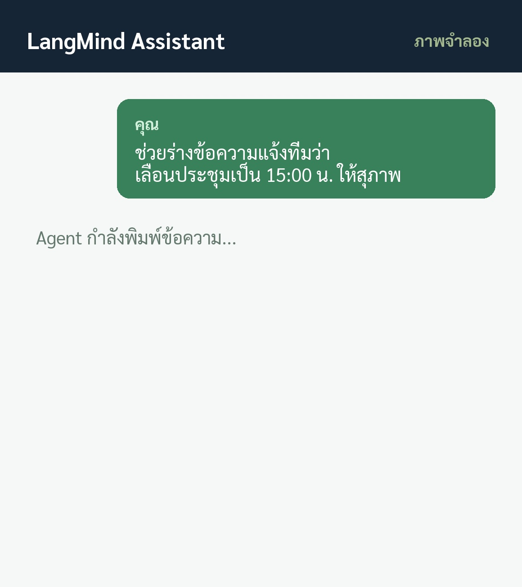
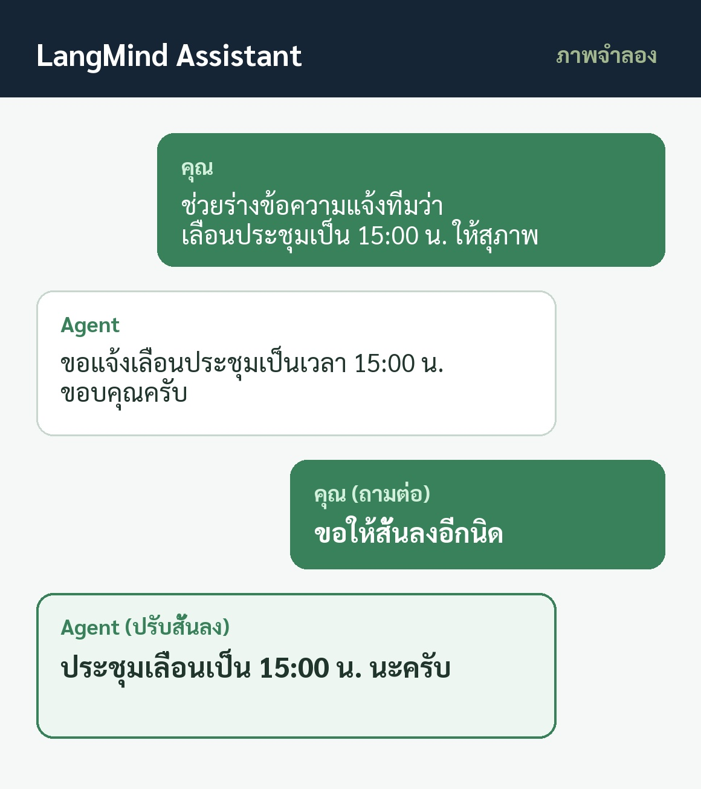

EP03 / CHAT API
ภาพจำลอง
1 เข้าใจ2 รู้จัก API3 ลองส่ง
แอปที่คุยด้วยแชททำได้ยังไง?


เตรียมอะไร?
เชื่อมตรงไหน?
ส่งคำขอยังไง?
ภาพรวมทั้งหมดAPI คืออะไร · ใครคุยกับใคร
แอปของคุณ= พนักงานหน้าร้าน
ส่งคำขอส่งคำถาม
รับผลลัพธ์รับคำตอบ
LangMind= ครัว / สมอง
แอปมือถือ / Frontendรับคำถาม · แสดงผลแชท
คำถาม
คำตอบ
ระบบหลังบ้านของคุณ (Backend)เก็บ API Key ปลอดภัย
Key1 ส่งคำขอ2 สตรีมผล3 คุยต่อ
ผลลัพธ์
LangMind Chat APIAgent · Server-Sent Events
1เตรียมต้องมี 3 อย่าง
Agent ใน LangMindตั้งค่า Prompt & ข้อมูลร้าน
คำแนะนำคลังความรู้
บันทึก Agent → กด Publish
publish ✓
Personal API Keylmpat_••••••••
chat:invoke
ระบบหลังบ้าน (Backend Server)เก็บ Key เป็น Secret · ป้องกันรั่วไหลสู่ Client
2เชื่อมกลุ่มที่ 1 · ส่งข้อความ
แอป
หลังบ้าน
1 · ส่งข้อความ
 LangMind
LangMind
POST
/api/chat/messageSSE Stream (ค่าเริ่มต้น)ทยอยสตรีมคำตอบกลับมาแบบ real-time เหมาะกับหน้าจอแชท
POST
/api/chat/message/blockingJSON ก้อนเดียว (Blocking)รอประมวลผลจนเสร็จสมบูรณ์ แล้วส่งคำตอบเต็มกลับครั้งเดียว
POST /api/chat/preview (Builder)
POST /messages/{id}/stop (สั่งหยุด)
2เชื่อมกลุ่มที่ 2 · จัดการประวัติ
แอป
หลังบ้าน
2 · จัดการห้องแชท
LangMind
1. เรียกอ่านประวัติบทสนทนา
GET /api/chat/conversations
GET /api/chat/conversations/{id}
GET /api/chat/conversations/{id}/messages
⚠️ ทุกเส้นต้องระบุ agent_id เสมอเพื่อยืนยันสิทธิ์
2. แก้ไขชื่อห้อง และลบประวัติ
PATCH /api/chat/conversations/{id} (เปลี่ยนชื่อ)
DELETE /api/chat/conversations/{id} (ลบถาวร)
⚠️ DELETE เป็นการลบถาวร ไม่สามารถกู้คืนได้ ควรถามยืนยันผู้ใช้
2เชื่อมกลุ่มที่ 3 · ส่วนเสริม
แอป
หลังบ้าน
3 · Feedback & Files
LangMind
1. ให้คะแนนประเมินคำตอบ (Feedback)
POST /api/chat/messages/{id}/feedback
👍 rating: 1
👎 rating: -1
2. ดาวน์โหลดไฟล์ที่ Agent สร้างขึ้น
GET /api/chat/messages/{id}/generated-files/{file_id}
PDF, Excel, ภาพ
✓ ทุก Endpoint ใช้สิทธิ์ Scope: chat:invoke
3ลองส่งยิงคำขอแรกด้วย cURL
แอป
หลังบ้าน
1 · ส่งคำขอแรก
LangMind
💬 ช่วยร่างข้อความแจ้งทีมว่าเลื่อนประชุมเป็น 15:00 น. ให้สุภาพ
POSTchat:invoke
/api/chat/message
Authorization: Bearer $LM_TOKEN
Content-Type: application/json
--data '{"agent_id": "<AGENT_ID>",
"query": "ช่วยร่างข้อความ...",
"conversation_id": null }'
💡 ส่ง "conversation_id": null เพื่อเริ่มบทสนทนาใหม่
3ลองส่งรับผลแบบ SSE Stream
แอป
หลังบ้าน
2 · อ่านผลสตรีม
LangMind
event: message_start
{ "conversation_id": "conv_123", "message_id": "msg_01" }
event: message
{ "answer": "ขอแจ้งเลื่อนประชุมเป็นเวลา 15:00 น. ขอบคุณครับ" }
event: message_end
{ "answer": "...", "usage": { "total_tokens": 78 } }
✓ แอปนำข้อความคำตอบไปแสดงผล และเก็บ conversation_id ไว้
3ลองส่งคุยต่อในเรื่องเดิม
แอป
หลังบ้าน
3 · ถามต่อ
LangMind
💬 ขอให้สั้นลงอีกนิด (ถามต่อ)
POSTchat:invoke
/api/chat/message
--data '{"agent_id": "<AGENT_ID>",
"query": "ขอให้สั้นลงอีกนิด",
"conversation_id": "conv_123" }'
Agent: “ประชุมเลื่อนเป็น 15:00 น. นะครับ”
สรุปภาพรวม3 หัวใจสำคัญ & LangMind
1เลือก Endpoint ให้ตรงงาน
ใช้ SSE Stream สำหรับแชทสด · ใช้ Blocking เมื่อต้องการรับ JSON ก้อนเดียว
2ปลอดภัยที่ระบบหลังบ้าน
เก็บ Personal API Key ฝั่ง Server เท่านั้น · ทุก Endpoint ใช้ scope chat:invoke
3ส่ง conversation_id เพื่อคุยต่อ
ส่ง null เพื่อเริ่มใหม่ · ส่ง ID เดิมเมื่อต้องการคุยต่อในเรื่องเดิม
สนับสนุนโดย
langmind.in.th

เคยขอให้ผู้ช่วยช่วยเขียนข้อความ
แล้วอยากให้แก้ต่ออีกนิดไหม?
แล้วอยากให้แก้ต่ออีกนิดไหม?
เช่น ขอให้สั้นลง
โดยคุยต่อในเรื่องเดิมได้ทันที
โดยคุยต่อในเรื่องเดิมได้ทันที
ถ้าอยากทำฟีเจอร์นี้ ต้องเตรียมอะไร
เชื่อมตรงไหน และส่งคำขอยังไง
เชื่อมตรงไหน และส่งคำขอยังไง
Chat API คือช่องทางที่แอปส่งคำถามให้ Agent
แล้วรับคำตอบกลับมาแสดงบนหน้าจอ
แล้วรับคำตอบกลับมาแสดงบนหน้าจอ
ภาพรวมมี 3 ส่วน: แอปมือถือ
ระบบหลังบ้านของคุณ และ LangMind
ระบบหลังบ้านของคุณ และ LangMind
ระบบหลังบ้านส่งคำขอ รับ Stream ตอบกลับ
และคุยต่อในบทสนทนาเดิม
และคุยต่อในบทสนทนาเดิม
สิ่งที่ต้องเตรียม อย่างแรกคือ Agent
ที่ตั้งค่าและกด publish แล้ว
ที่ตั้งค่าและกด publish แล้ว
อย่างที่สอง Personal API Key
ที่มีสิทธิ์ chat:invoke
ที่มีสิทธิ์ chat:invoke
อย่างที่สาม ระบบหลังบ้านของแอป
ไว้เก็บ Key และเรียก API แทนหน้าบ้าน
ไว้เก็บ Key และเรียก API แทนหน้าบ้าน
เส้นหลักส่งข้อความมี 2 แบบ:
1. POST /api/chat/message (SSE Stream)
1. POST /api/chat/message (SSE Stream)
2. POST /api/chat/message/blocking
รอคำตอบเต็มทั้งก้อนเป็น JSON
รอคำตอบเต็มทั้งก้อนเป็น JSON
พร้อมเส้น preview ใน Builder
และคำสั่ง stop stream เมื่อต้องการหยุด
และคำสั่ง stop stream เมื่อต้องการหยุด
กลุ่มจัดการประวัติ: อ่านรายการ, รายละเอียด,
และข้อความ โดยต้องระบุ agent_id
และข้อความ โดยต้องระบุ agent_id
PATCH แก้ชื่อ/สถานะ
DELETE ลบบทสนทนาถาวร (Permanent)
DELETE ลบบทสนทนาถาวร (Permanent)
กลุ่มเสริม: POST feedback
ให้คะแนน rating: 1 หรือ -1
ให้คะแนน rating: 1 หรือ -1
และ GET ดาวน์โหลดไฟล์ที่ Agent สร้าง
ทุก endpoint ใช้สิทธิ์ chat:invoke
ทุก endpoint ใช้สิทธิ์ chat:invoke
ส่งคำขอแรก: ยิง POST /api/chat/message
พร้อม Bearer API Key
พร้อม Bearer API Key
ใส่ agent_id, query และส่ง
"conversation_id": null เพื่อเริ่มใหม่
"conversation_id": null เพื่อเริ่มใหม่
Stream ส่งกลับมาเป็น event:
message_start ให้ ID บทสนทนาและข้อความ
message_start ให้ ID บทสนทนาและข้อความ
message ทยอยส่งข้อความคำตอบ
และ citations แหล่งอ้างอิง (ถ้ามี)
และ citations แหล่งอ้างอิง (ถ้ามี)
ปิดท้ายด้วย message_end
มีคำตอบฉบับเต็มและ usage ให้แอปใช้งาน
มีคำตอบฉบับเต็มและ usage ให้แอปใช้งาน
ถามต่อ: ส่งคำถามใหม่พร้อม
conversation_id เดิมที่เก็บไว้
conversation_id เดิมที่เก็บไว้
Agent เข้าใจบริบทเดิมทันที
โดยไม่ต้องปูพื้นใหม่
โดยไม่ต้องปูพื้นใหม่
สรุป 3 ขั้นตอน:
เลือก Endpoint · ปลอดภัยที่หลังบ้าน · เก็บ ID คุยต่อ
เลือก Endpoint · ปลอดภัยที่หลังบ้าน · เก็บ ID คุยต่อ
เชื่อม Chat API กับ LangMind ได้แล้ววันนี้
langmind.in.th
langmind.in.th